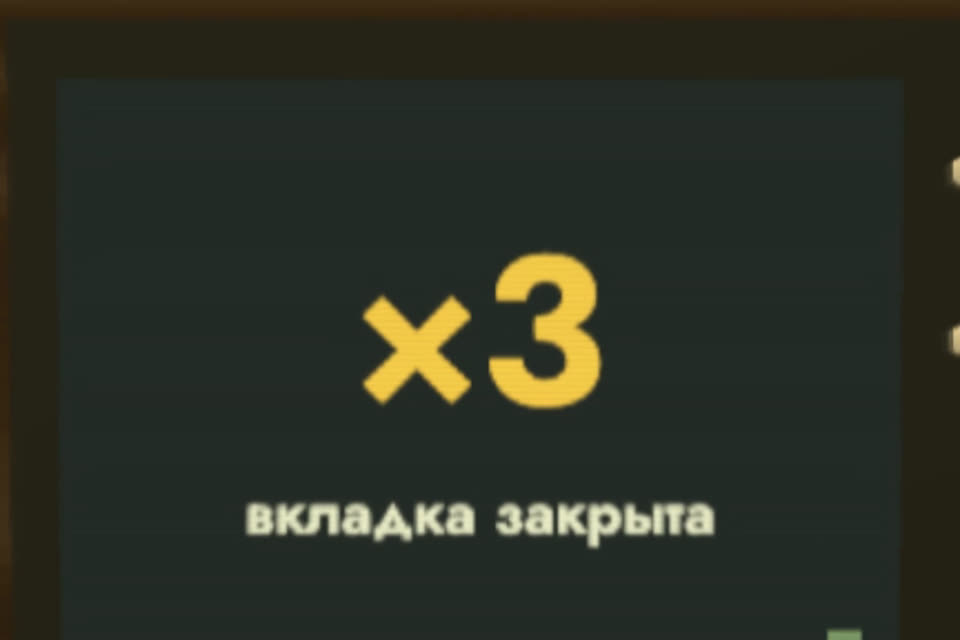

Ноутбук-зануда: ворчит и закрывает рилсы
Скрипт для Mac. Открыли видео или соцсеть вместо работы — ноутбук ворчит голосом. На третий раз сам закрывает вкладку и включает рабочий плейлист.
- бесплатно
- без установки пакетов
- ничего не отправляет в сеть
- выключается Ctrl+C
К ролику «Попросил ИИ не пускать меня в рилсы» · обновлено 27 октября 2026

Нужны только macOS и встроенный python3. Работает с Safari и Google Chrome; Firefox и Яндекс Браузер адрес вкладки не отдают.
Первый результат за 3 шага
Скачайте архив
Код, настройки и три реплики Горо.
Распакуйте, например, в папку ~/zanuda. Нужны только macOS и встроенный python3: в первый раз macOS может предложить поставить «инструменты разработчика», согласитесь.
Те же файлы по отдельности: zanuda.py, config.json, demo.tsv, sounds/1.wav, 2.wav, 3.wav.
Впишите свой чёрный список
Откройте config.json в любом редакторе.
Главное: blacklist (что запрещено) и work_url (что открыть на третий раз, например ваш плейлист или документ).
{
"interval_s": 1.5,
"reset_after_s": 600,
"nag_every_s": 20,
"blacklist": ["youtube.com", "youtu.be", "vk.com", "vk.ru", "tiktok.com", "instagram.com",
"rutube.ru", "twitch.tv", "reddit.com", "x.com", "twitter.com", "pikabu.ru"],
"sounds": ["sounds/1.wav", "sounds/2.wav", "sounds/3.wav"],
"work_url": "https://music.yandex.ru/",
"close_tab": true,
"browsers": {"Safari": "safari", "Google Chrome": "chrome"}
}
Свои реплики: замените sounds/1.wav, 2.wav, 3.wav. Быстрее всего встроенным голосом Mac:
say -v Milena -o sounds/1.wav --data-format=LEI16@22050 "Опять? Дедлайн в пятницу."Запустите
Сначала проверка, потом боевой режим.
cd ~/zanuda
python3 zanuda.py --check
python3 zanuda.py--check один раз показывает, что видит зануда, и выходит. Второй запуск — боевой: следит, пока открыто окно Терминала.
Какие разрешения спросит macOS и зачем
Одно: «Автоматизация». Окно «„Терминал“ хочет получить доступ к управлению „Safari“» (для Chrome спросит отдельно). Это нужно, чтобы прочитать адрес активной вкладки и закрыть её на третий раз. Нажмите «Разрешить».
«Универсальный доступ» и «Запись экрана» не нужны. Активное приложение скрипт узнаёт встроенной командой lsappinfo, без прав. Если macOS вдруг их просит, что-то не так: не разрешайте.
zanuda.py и посмотрите сами: это 260 строк.--check печатает строку вида «впереди: … | адрес: … | в чёрном списке: …». Боевой запуск пишет «Зануда следит. Остановить: Ctrl+C», а на сайте из списка звучит первая реплика.
Подробнее
Что он делаеттри нарушения, сброс, повтор
Раз в полторы секунды смотрит, какое приложение впереди и какой адрес открыт в активной вкладке Safari или Google Chrome. Если сайт из чёрного списка:
- первый раз: «Опять? Дедлайн в пятницу.»
- второй: «Я всё вижу.»
- третий: «Всё. Работаем.» Вкладка закрывается, открывается ваш рабочий адрес, счётчик с нуля.
10 минут без срывов — счётчик сбрасывается. Сидите на запрещённом сайте дольше 20 секунд — это следующее нарушение. Всё настраивается в config.json.
Как выключитьи забрать права
- Ctrl+C в окне Терминала, где он запущен.
- Или из другого окна:
pkill -f zanuda.py- Забрать права: Системные настройки → Конфиденциальность и безопасность → Автоматизация → Терминал, снять галочки у браузеров.
Или пусть Claude Code сделает своегопромпт: такой же скрипт с тестами
Вставьте в Claude Code (или Codex). Он напишет такой же скрипт с тестами, а реплики придумает сам.
Сделай мне «ноутбук-зануду» для macOS на Python без сторонних пакетов.
Что он делает:
- раз в 1,5 секунды узнаёт активное приложение через `lsappinfo front` и
`lsappinfo info -only name <ASN>` (без прав «Универсального доступа»);
- если впереди Safari или Google Chrome, читает адрес активной вкладки через osascript
(Safari: URL of current tab of front window; Chrome: URL of active tab of front window);
- если домен из чёрного списка (совпадение домена или поддомена, а не подстроки:
youtube.com ловит m.youtube.com, но не notyoutube.com), увеличивает счётчик
и проигрывает через afplay звук по номеру нарушения: sounds/1.wav, 2.wav, 3.wav;
- одно открытие сайта — одно нарушение; если сижу на сайте дольше nag_every_s секунд,
это следующее нарушение;
- на третьем нарушении после звука закрывает эту вкладку и открывает work_url,
счётчик обнуляется;
- если reset_after_s секунд не было нарушений, счётчик обнуляется;
- настройки в config.json: interval_s, reset_after_s, nag_every_s, blacklist, sounds,
work_url, close_tab, browsers.
Обязательно:
- логику счётчика вынеси в отдельный класс без вызовов macOS и покрой тестами unittest
(чёрный список, три нарушения, повтор через nag_every_s, сброс по таймауту, не-браузер);
- флаг --dry-run: вместо браузера читать строки «приложение<TAB>адрес» из stdin или файла,
действия только печатать;
- флаг --check: один раз показать, что видно, и выйти;
- Ctrl+C завершает без трейсбека;
- если macOS не дала прав (ошибка -1743), напиши человеческим языком, где их включить;
- никаких прав «Универсальный доступ» и «Запись экрана», ничего не отправлять в сеть.
Сначала напиши тесты и прогони их, потом покажи, как запустить --check.
Реплики для sounds/ предложи сам, смешные и короткие, и сгенерируй их командой `say`.Весь кодzanuda.py, тот же, что в архиве
Тот же zanuda.py, что в архиве (отдельным файлом). Проверить без браузера:
python3 zanuda.py --dry-run --feed demo.tsv#!/usr/bin/env python3
"""Ноутбук-зануда: стыдит голосом Горо, когда открываешь видео или соцсети вместо работы.
Раз в 1–2 секунды смотрит, какое приложение сейчас впереди и какой адрес открыт
в активной вкладке Safari или Google Chrome. Если домен из чёрного списка:
1-й раз — реплика sounds/1.wav («Опять? Дедлайн в пятницу.»)
2-й раз — реплика sounds/2.wav («Я всё вижу.»)
3-й раз — реплика sounds/3.wav («Всё. Работаем.»), вкладка закрывается,
открывается рабочий адрес из config.json, счётчик обнуляется.
Если долго (reset_after_s) ничего не нарушал — счётчик тоже обнуляется.
Только стандартная библиотека Python 3.9+ и встроенные в macOS osascript, lsappinfo, afplay, open.
Права macOS: только «Автоматизация» (Терминал → Safari / Google Chrome), её спросят при первом запуске.
«Универсальный доступ» и «Запись экрана» не нужны: активное приложение читается через lsappinfo.
python3 zanuda.py # боевой режим
python3 zanuda.py --check # один раз показать, что видит зануда, и выйти
python3 zanuda.py --dry-run # без браузера: строки «приложение<TAB>адрес» со stdin, действия только печатаются
python3 zanuda.py --dry-run --feed demo.tsv
Остановить: Ctrl+C в окне терминала (или `pkill -f zanuda.py`).
"""
from __future__ import annotations
import argparse
import json
import subprocess
import sys
import time
from dataclasses import dataclass, field
from pathlib import Path
from typing import Callable, Iterable, Optional
from urllib.parse import urlparse
HERE = Path(__file__).resolve().parent
DEFAULTS = {
"interval_s": 1.5, # как часто смотреть
"reset_after_s": 600, # столько секунд без нарушений — и счётчик снова с нуля
"nag_every_s": 20, # если сидишь на запрещённом сайте дальше, через сколько секунд следующая реплика
"blacklist": ["youtube.com", "youtu.be", "vk.com", "vk.ru", "tiktok.com", "instagram.com",
"rutube.ru", "twitch.tv", "reddit.com", "x.com", "twitter.com", "pikabu.ru"],
"sounds": ["sounds/1.wav", "sounds/2.wav", "sounds/3.wav"],
"work_url": "https://music.yandex.ru/", # что открыть на третий раз: свой рабочий плейлист или документ
"close_tab": True,
"browsers": {"Safari": "safari", "Google Chrome": "chrome"},
}
# ---------------------------------------------------------------- логика (без macOS, её гоняют тесты)
def host_of(url: Optional[str]) -> str:
if not url:
return ""
try:
h = urlparse(url if "://" in url else "https://" + url).hostname or ""
except ValueError:
return ""
return h.lower().rstrip(".")
def is_blacklisted(url: Optional[str], blacklist: Iterable[str]) -> bool:
"""youtube.com ловит youtube.com, www.youtube.com, m.youtube.com, но не notyoutube.com."""
h = host_of(url)
if not h:
return False
for d in blacklist:
d = d.lower().strip().lstrip(".")
if d and (h == d or h.endswith("." + d)):
return True
return False
@dataclass
class Action:
kind: str # "say" | "close_tab" | "open"
arg: str = ""
browser: str = ""
@dataclass
class Zanuda:
"""Счётчик нарушений. step() получает то, что сейчас впереди, и время, а возвращает, что сделать."""
blacklist: list
sounds: list
work_url: str = ""
close_tab: bool = True
reset_after_s: float = 600
nag_every_s: float = 20
browsers: dict = field(default_factory=lambda: dict(DEFAULTS["browsers"]))
strikes: int = 0
last_strike_at: Optional[float] = None
on_bad: bool = False # в прошлый раз впереди был запрещённый сайт
def step(self, app: Optional[str], url: Optional[str], now: float) -> list:
if self.last_strike_at is not None and now - self.last_strike_at >= self.reset_after_s:
self.strikes = 0
self.last_strike_at = None
bad = app in self.browsers and is_blacklisted(url, self.blacklist)
if not bad:
self.on_bad = False
return []
fresh = not self.on_bad
nag = self.on_bad and self.last_strike_at is not None and now - self.last_strike_at >= self.nag_every_s
self.on_bad = True
if not (fresh or nag):
return []
self.strikes += 1
self.last_strike_at = now
n = min(self.strikes, len(self.sounds))
acts = [Action("say", self.sounds[n - 1])]
if self.strikes >= len(self.sounds):
if self.close_tab:
acts.append(Action("close_tab", browser=app))
if self.work_url:
acts.append(Action("open", self.work_url, browser=app))
self.strikes = 0
self.on_bad = False # вкладку закрыли: следующий заход снова «свежий»
return acts
# ---------------------------------------------------------------- macOS
def _run(cmd: list, timeout: float = 3) -> Optional[str]:
try:
r = subprocess.run(cmd, capture_output=True, text=True, timeout=timeout)
except (OSError, subprocess.TimeoutExpired):
return None
if r.returncode != 0:
if "-1743" in r.stderr: # нет разрешения «Автоматизация»
print("! macOS не разрешила читать вкладку: Системные настройки → Конфиденциальность и безопасность → Автоматизация", file=sys.stderr)
return None
return r.stdout.strip()
def front_app() -> Optional[str]:
"""Имя активного приложения без прав «Универсального доступа»: lsappinfo встроен в macOS."""
asn = _run(["lsappinfo", "front"])
if not asn:
return None
out = _run(["lsappinfo", "info", "-only", "name", asn]) or ""
# формат: "LSDisplayName"="Safari"
return out.split("=", 1)[1].strip().strip('"') if "=" in out else None
SCRIPTS = {
"safari": {"url": 'tell application "{app}" to get URL of current tab of front window',
"close": 'tell application "{app}" to close current tab of front window'},
"chrome": {"url": 'tell application "{app}" to get URL of active tab of front window',
"close": 'tell application "{app}" to close active tab of front window'},
}
def tab_url(app: str, dialect: str) -> Optional[str]:
return _run(["osascript", "-e", SCRIPTS[dialect]["url"].format(app=app)])
class Mac:
def __init__(self, browsers: dict):
self.browsers = browsers
self.player: Optional[subprocess.Popen] = None
def observe(self):
app = front_app()
if app in self.browsers:
return app, tab_url(app, self.browsers[app])
return app, None
def do(self, a: Action):
if a.kind == "say":
if self.player and self.player.poll() is None:
self.player.wait() # реплики не наслаиваются
self.player = subprocess.Popen(["afplay", str(HERE / a.arg)])
elif a.kind == "close_tab":
if self.player:
self.player.wait() # сначала Горо договаривает «Всё. Работаем.»
_run(["osascript", "-e", SCRIPTS[self.browsers[a.browser]]["close"].format(app=a.browser)])
elif a.kind == "open":
_run(["open", "-a", a.browser, a.arg] if a.browser else ["open", a.arg])
class DryRun:
"""Источник подменён: строки «приложение<TAB>адрес» (или «приложение адрес»). Ничего не запускает, только печатает."""
def __init__(self, lines: Iterable[str]):
self.lines = iter(lines)
def observe(self):
for raw in self.lines:
raw = raw.rstrip("\n")
if not raw.strip() or raw.lstrip().startswith("#"):
continue
if "\t" in raw:
app, _, url = raw.partition("\t")
else:
app, _, url = raw.rpartition(" ")
if not app or not ("." in url or "://" in url):
app, url = raw, ""
return app.strip() or None, url.strip() or None
raise EOFError
def do(self, a: Action):
print(f" -> {a.kind} {a.arg} {a.browser}".rstrip(), flush=True)
def load_config(path: Optional[Path]) -> dict:
cfg = dict(DEFAULTS)
p = path or HERE / "config.json"
if p.exists():
cfg.update(json.loads(p.read_text(encoding="utf-8")))
return cfg
def main(argv=None) -> int:
ap = argparse.ArgumentParser(description="Ноутбук-зануда")
ap.add_argument("--config", type=Path)
ap.add_argument("--dry-run", action="store_true", help="без браузера: адреса со stdin или --feed")
ap.add_argument("--feed", type=Path, help="файл для --dry-run: строки «приложение<TAB>адрес»")
ap.add_argument("--tick", type=float, help="шаг времени для --dry-run, секунд (по умолчанию interval_s)")
ap.add_argument("--check", action="store_true", help="один раз показать приложение и адрес и выйти")
a = ap.parse_args(argv)
cfg = load_config(a.config)
z = Zanuda(blacklist=cfg["blacklist"], sounds=cfg["sounds"], work_url=cfg["work_url"], close_tab=cfg["close_tab"],
reset_after_s=cfg["reset_after_s"], nag_every_s=cfg["nag_every_s"], browsers=cfg["browsers"])
if a.dry_run:
src = DryRun(a.feed.read_text(encoding="utf-8").splitlines() if a.feed else sys.stdin)
clock, tick = 0.0, a.tick or cfg["interval_s"]
while True:
try:
app, url = src.observe()
except EOFError:
return 0
acts = z.step(app, url, clock)
print(f"[{clock:7.1f}s] {app or '-'} {url or ''} нарушений: {z.strikes}", flush=True)
for act in acts:
src.do(act)
clock += tick
mac = Mac(cfg["browsers"])
if a.check:
app, url = mac.observe()
print("впереди:", app, "| адрес:", url, "| в чёрном списке:", is_blacklisted(url, cfg["blacklist"]))
return 0
missing = [s for s in cfg["sounds"] if not (HERE / s).exists()]
if missing:
print("нет звуков:", missing, file=sys.stderr)
return 1
print("Зануда следит. Остановить: Ctrl+C", flush=True)
try:
while True:
app, url = mac.observe()
for act in z.step(app, url, time.monotonic()):
print(time.strftime("%H:%M:%S"), act.kind, act.arg, act.browser, flush=True)
mac.do(act)
time.sleep(cfg["interval_s"])
except KeyboardInterrupt:
print("\nЗануда выключен.")
return 0
if __name__ == "__main__":
sys.exit(main())
Если застряли
Нажал «Не разрешать» и адрес не читается
Системные настройки → Конфиденциальность и безопасность → Автоматизация → Терминал, включите браузер.
macOS просит «Универсальный доступ» или «Запись экрана»
Они не нужны. Если macOS вдруг их просит, что-то не так: не разрешайте.
Пишет «нет звуков»
Скрипт не нашёл файлы из sounds в config.json. Проверьте, что папка sounds/ с 1.wav, 2.wav, 3.wav лежит рядом с zanuda.py.
macOS предлагает поставить «инструменты разработчика»
Так бывает при первом запуске python3. Согласитесь.
Где не сработает
- Firefox и Яндекс Браузер адрес вкладки через AppleScript не отдают.
- Brave и Edge понимают те же команды, что Chrome: добавьте в
browsersстроку"Brave Browser": "chrome". Мы это не проверяли. - Windows и Linux: нет. Попросите Claude Code переписать под свою систему, промпт выше подойдёт как основа.
- Работает, пока открыт Терминал. Автозапуск через LaunchAgent возможен, но тогда разрешение спросят заново.